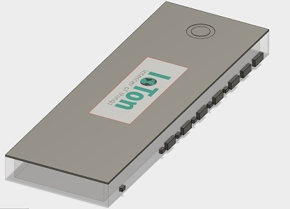
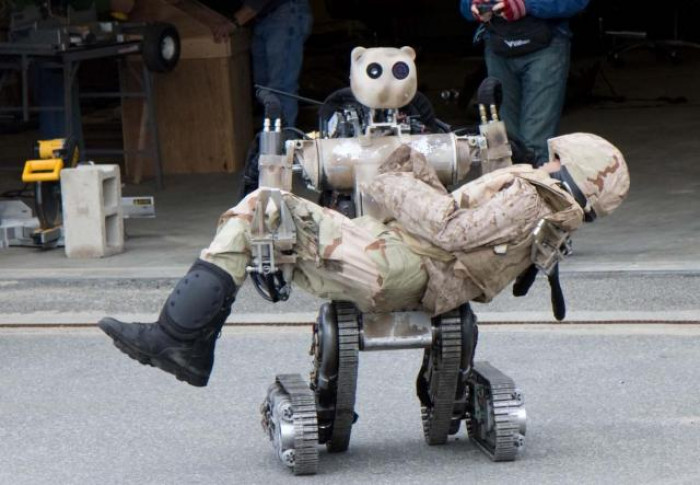
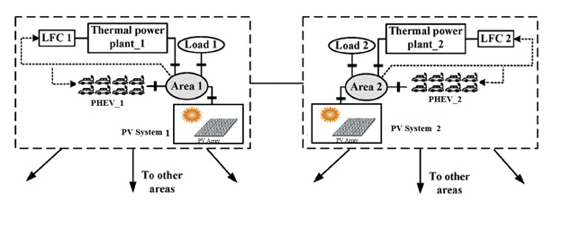

Building Automation
This project includes design, development of an automated building system based on wireless sensor network and internet connectivity (IoT). Efficient, reliable and secure real-time communication, control, energy efficiency, and remote monitoring are important features of the system.

Care-Taker Robot
The design and development of a theme project to bring our awareness to the issue of catering to the needs of patients, for example, automating the task of serving them, even in the absence of human supervision.

Coordinated Control of DERs and Thermal Units for Load Frequency Control
This project Includes the V2G control for secondary LFC using the PID controller of two area system with distributed energy resources (Solar) and smart bidirectional charging and discharging EVs where CSA optimization technique is used for optimal tuning of secondary control parameters.